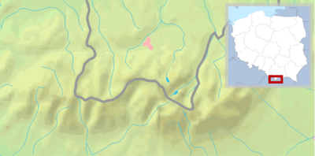

Та́три (слов., пол. Tatry) — найвища частина Карпатських гір, загальною площею 785 км², 610 км² (бл. 75 %) з яких розташовані на території Словаччини і 175 км² (бл. 25 %) — Польщі. Довжина гірського пасма по прямій — 53 км, вздовж головного хребта — близько 80 км.
Найвища точка — гора Герлаховський штит, 2655 м, розташований на Словацькій території. Найвища точка на польській території — гора Риси. Загалом Татри нараховують 25 піків вище 2500 м.

Географія
Татри поділяються на:
- Західні Татри — (словац. Západné Tatry, пол. Tatry Zachodnie)
- Східні Татри (словац. Východné Tatry, пол. Tatry Wschodnie), які, в свою чергу, поділяються на:
- Високі Татри (словац. Vysoké Tatry, пол. Tatry Wysokie)
- Белянські Татри (словац. Belianske Tatry, пол. Tatry Bielskie).
Складені переважно гранітами, гранодіоритами й вапняками. Альпійський рельєф зі слідами древнього заледеніння (кари, цирки, гірські озера); карстові печери (Бєлянська, Алабастрова тощо). На схилах до висоти 1500 м — ялинові ліси з домішкою бука, ялиці, сосни, модрини, вище — пояс криволісу (до 1900 м), субальпійські й альпійські луки (до 2250 м). Найвища в Карпатах метеорологічна обсерваторія (Ломніцкі-Штіт, 2632 м).
Клімат
Клімат Татр подібний до альпійського. Він відрізняється частими змінами погодних умов, значними коливаннями температур, значною хмарністю та кількістю опадів переважно у вигляді снігу (на високогір'ях навіть влітку). Сніжний покрив утримується до травня-червня (подекуди може триматись цілорічно), часті сильні вітри західного та південно-західного напрямку. Більшість погодних явищ пов'язана з проходженням атмосферних фронтів.
Абсолютний мінімум температури на вершині Каспрів верх (1987 м н.р.м.) становить −39,5 °C (лютий, 1929), а максимум — +30,2 °C (серпень, 1943). Висота снігового покриву у березні сягає 3 метрів, часті сходження снігових лавин. Зимою спостерігаються інверсії температур.

Туризм та охорона природи
І польська, і словацька сторона гір перебувають під охороною словацького і польського Татранських національних заповідників (Tatranský národný park, TANAP і Tatrzański Park Narodowy відповідно), які співпрацюють з 1954 року. У 1993 році Татри були занесені до списку біосферних заповідників ЮНЕСКО.
У Словаччині траси в Татрах над гірськими хатинками закриті з 1 листопада по 15 червня, порушення заборони штрафується фінансово. У Польщі траси відкриті увесь рік. Туристичним центром з польської сторони є місто Закопане, зі словацької — Попрад.

Цікаві факти про Татри
- Найвищий гірський пік, повністю розташований на території Польщі — Козі-Верх (пол. Kozi Wierch) — 2291 м.
- Найбільше озеро у Татрах — Морське Око (34,9 га).
- Найглибше озеро в Татрах — Вельки-Ставши в Долині п'яти озер (79,3 м).
- Найглибша печера — Велька-Сніжна в масиві Червоні Верхи (814 м денівеляції).
- Найбільша за довжиною долина польських Татр — Суха Вода-Гонсеніцова (13 км)
- Найвищий водоспад в польських Татрах (і у всій Польщі) — Велька-Сіклава, спадаючий з порога Долини п'яти озер (70 м).
- Рекордна товщина сніжного покриву 3,55 м відзначена на вершині Каспрів верх у квітні 1996 р.
Див. також
Підгалля - регіон Татр, розташований нижче галь — високогірних пасовищ, де ведеться вівчарство.
Примітки
Татри Архів оригіналу за 25 грудня 2011. Процитовано 28 листопада 2011.
Посилання
- Татри// Універсальний словник-енциклопедія. — 4-те вид. — К. : Тека, 2006.
- Татри — польський інтернет портал
- Татранський національний заповідник (Словаччина)
- Татранський національний заповідник (Польща)